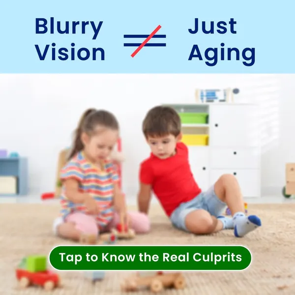

The swash (a leaf, 90 × 58 units), its dot, and the name set beside it. It signs every page off in the footer and doubles as the way home.
The master D
A rectangle and a true semicircle (R = H / 2) holding a 10-unit grid at 30%, with the lockup knocked out in white at (50.9, 112). The construction is the identity - every generator in Tools draws from these exact paths, never from a redrawing.
Sizes
Use
Height
Why
Nav
28px
Sits inside the 44px target of a 68px bar.
Footer sign-off
32px
The name's cap height is 0.256 of the lockup, so 32px renders an 8.2px cap - just under the 12px label floor. At that size the lockup reads as one mark, not a line of copy. The link keeps a 44px min-height.
Favicon
16 / 32 / 180
The D alone; the swash disappears below 32px.
Rules
Do
Use the SVG from assets/brand/; let CSS set height with width:auto.
Dim it on hover (opacity:.6) - the artwork is pure black.
Invert it, whole, on a dark surface.
Don't
Recolour, outline or add effects to the mark.
Set the nav logo at 65% like the other nav links - identity is not a de-emphasised item.
Redraw the swash; the curve is two arcs on a diagonal and drifts if traced.
Five greys, each with one job. Left half of a chip is light theme, right half is dark. Click any chip to copy its variable.
The ladder is the point. 18.1 · 8.86 · 6.69 · 5.10 · 4.54 in light, 16.0 · 8.93 · 6.74 · 5.15 · 4.61 in dark. --mut is the floor - it was #8b8b8b (3.4:1) and failed AA for 18px prose, so it was darkened rather than restricted to large text.
Fill
--ink-hover is one measured grade above --ink: L* 7.2 to 12.7, a +5.5 step chosen off a ladder of five. Filled buttons used to hover to --ink-3 (+39.2), which made them go pale exactly when touched.
Surfaces
Lines
--tint is never used solid. Translucent marks are struck from it with color-mix() so they stay a tint over any surface: 16% for the dot grid and annotation chip, 55% for link underlines.
Inverse
Status
Spec. Colour that carries meaning: success, warning, error. Hues are fixed in OKLCH (150, 70, 27); each foreground clears 4.5:1 on paper and on its own tint.
PublishedDraftFailed
The four places colour lives
Where
What
Aurora hero
GLSL constants CA/CB/CC in OKLCH - not CSS, so palette sweeps miss them.
Case illustrations
The pointer gradient (ga*/gb* uniforms). Resting colour is neutral; colour peaks only under the cursor.
Selection
--sel, sampled from 535,647 rendered aurora pixels (mean #b0fded) and pushed to the lightest in-gamut point on hue 180: 16.1:1 behind ink.
Glitch
--g-a/-b/-c, the shader's hues at L .62 - the most chroma sRGB will hold, so the magenta finally reaches the screen.
Auditing for stray colour
Scan the browser-serialised CSSOM, not the source: hsl(255 40% 96.5%) once survived a hex/rgb grep and only surfaced as rgb(244,243,250) after the browser normalised it.
All colour tokens
Families
--head-fontOnest - display
--sansOnest - display & body Variable 400..600 from Google Fonts. A subrange request: 7 @font-face rules instead of 21.
--serifRedaction 35 - accents Italic 400 only, from jsDelivr (OFL). The number is how destroyed the face is; cleaner is downward, and 35 is settled.
--monoui-monospace - labels, numbers, code The system stack. Uppercase, tracked, 12px.
--monoui-monospace - code and numbers
Scale
Seven steps and nothing between them. 18px is the floor for anything meant to be read; the 12px mono label sits outside the scale because it is chrome, not copy.
--t-head-lg64 Page title
--t-head56 Section heading
--t-sub-lg40 Case title
--t-sub-md32 Beat title
--t-sub24 Card title, lede
--t-body18 Body copy, the reading floor
--t-ui14 Dense UI: rails, menus, docs
--t-label12 Mono label
Stepping down
Role
Desktop
≤ 900
≤ 640
h1
64
56
40
h2
56
40
32
h3 (case title)
40
32
24
Pull quote
40
24
24
At 640, h1 and h2 were both 40px once, which flattened the two; h2 now steps to 32 so the pair stays apart.
Headings
Selling through a single product page
What the data said
Text
A lede sits one step under the heading at 24px, in --mut.
Body copy is 18px at line-height 1.7, set in --ink-body with a 62ch measure. Inline strong goes to ink at 600 - at the heading weight of 450 it would stop reading as emphasis.
Mono label · 12px · .14em
Weights
450 is a genuine instance of Onest's variable axis, not a synthesised in-between: a width probe gives 746.25 / 749.77 / 753.16 / 759.69px at 400 / 450 / 500 / 600, strictly monotonic.
Rules
Do
Accent one word per heading with Redaction - the word the sentence turns on.
Use tabular numbers for anything that counts.
Prove a webfont loads with a width probe, never by eye.
Don't
Set a whole paragraph or pull quote in Redaction - the pull quote is Onest italic.
Ask Redaction for 500 or 600: only italic 400 is declared, anything else synthesises.
Use clamp() for type.
All type tokens
Scale
--s-1 · 4
--s-2 · 8
--s-3 · 12
--s-4 · 16
--s-5 · 20
--s-6 · 24
--s-7 · 28
--s-8 · 32
--s-10 · 40
--s-11 · 44
--s-14 · 56
--s-16 · 64
--s-21 · 84
Vertical rhythm
Every section pads var(--case-pad) 0 (84px, 64px at 900). Two halves stacked make every section break 168px - the same as the gap between two cases - so the page has one beat between blocks instead of 169, 244 and 40px. Heading to content is 108px in Work and About alike.
Inside components
Gap
Value
Icon to label, body text
10px - the flex gap replaces the whitespace node inline-flex drops
Icon to label, mono
6px
Card padding
20px (--s-5)
Card grid gap
14px - shipped; new grids use --s-4
Figure padding
40px, 20px at 640
Containers
Every inner section uses the same container as its page - a sub-section never narrows itself independently. Prose keeps its own measure (max-width:62ch) inside the container instead.
Breakpoints
Width
What changes
1180
Evidence reel narrows its caption column.
900
Type steps down one; two-column layouts stack; --case-pad 84 → 64.
640
Type steps again; gutter 44 → 22; card grids go single-column; figure padding halves.
400
The loader skips - the headline re-wraps and the drum cannot land on it.
Custom properties cannot be used in media queries, so breakpoints are documented values, not tokens.
Columns
1fr
1fr · gap 56
.cols is the case-page split. The home page case row is 1fr 1.05fr with a 64px gap, flipping its visual to the left on alternate rows.
Stacking
--r-xs · 4
--r-sm · 8
--r-md · 14
--r-lg · 20
--r-device · 34
--r-pill · 99
Nesting
Corners inside corners are concentric. The inner radius is the outer radius minus the gap between the two edges: a --r-lg shell (20) with an 8px gap holds a 12px corner, so the space between the curves stays even all the way round. The same radius inside and out makes the gap fat at the corners and thin on the sides.
20 − 8 = 12
20 inside 20
In CSS the rule is the .nest utility: set the shell's radius and gap, and every direct child takes the difference.
Components follow it the same way: a segmented control's selected item is --r-sm minus its 3px inset, a menu item is --r-md minus the menu's padding, and a device screen is --r-device minus its 2px edge. When the gap is as large as the outer radius or larger, the curves no longer read together; the inner element takes its own token from the scale.
Flat
A hairline and paper. Cards, figures, shots: no shadow.
--shadow-popPopovers, menus, dialogs, toasts and the tool dock.
Do
Lift only what overlaps content: if it can cover a sentence, it gets --shadow-pop.
Don't
Use shadow for hover on cards or buttons - a darker border or fill carries the affordance. Device frames have no bezel and no shadow, just a 2px hairline.
Easing
Curves
Each curve plots progress against time. The dashed line is linear; the handles are the two control points of the cubic-bezier. A steep start means the movement leaves quickly; a flat end means it settles. Play sends a dot along each curve at the same speed as the tracks above.
--ease-outSettle. Reveals, nav tuck, icon nudge.--ease-ioStarts and stops on screen: the loader drum.--ease-snapPhysical UI: switches, drawers, chevrons.
Durations
Every duration, named by role and drawn to scale. Play runs a dot across each bar in exactly that time, on the house curve.
Slow motion
At full speed, a wrong easing or origin hides inside 200ms. Slowed to a tenth, it shows. The control below sets the speed for every animation on the page - transitions, keyframes and the Web Animations API - and S toggles between full speed and the last slow one. Pages whose components move carry the same control under their title.
<!-- any element; heyrav.js wires it -->
<button data-speed="0.25">.25X</button>
heyrav.speed(0.1); // set
heyrav.speed(); // read
// canvas or rAF loops
addEventListener('heyrav:speed',
e => clock.rate = e.detail);
Check every new animation at .1X before it ships. Look for the origin, the first and last frames, and any two properties that finish at different times.
Canvas and rAF loops opt in. CSS and the Web Animations API follow automatically; a hand-written loop multiplies its frame delta by heyrav.speed().
The shortcut only exists where a speed control is on the page, so linking heyrav.js never takes over a key on its own.
Rules
Entry only. Reveals play once as content arrives and never again on scroll back.
Cursors do not ease. The hero's pixel hand moves with steps(1,end) - smooth reads as a floating illustration.
Two animations do not compose transform. Split them across nested elements.
Reduce removes motion, not meaning. The nav still tucks and the loader still runs - each in one frame.
Reduced motion
@media (prefers-reduced-motion:reduce){
.rv{opacity:1;transform:none;filter:none;transition:none;}
.nav{transition:none;} /* still tucks - a layout response, not decoration */
}
Voices
Each world speaks in one voice, so a page never sounds like two products. The speaker at the foot of the sidebar turns sound on for every world at once.
World
Voice
Touch
Move and result
Studio, Paper Pixel, Sunken
Core
Core
Core
Pixel
Pixel
Retro
Retro, with Arcade for open, close, theme and video, which Retro has no sound for
Aurora
Aurora
Core
Zen: pure tones and dry wood for everything that moves or finishes
Kolam
Kolam
Mridangam strokes, recorded
Mridangam, and a temple bell for a success. A veena plays low under the page while sound is on, with a koel now and then.
Where sound goes
Every interaction in the system that carries a sound, sorted into three weights. The controls play the voice picked in the bar. Under each one, the same cue in all four voices.
Touch - a control changed state under the finger. Shortest and quietest: under 80ms, about half volume.
Move - something opened, closed or changed place. Under 250ms.
Result - work finished or failed. The only weight allowed a tail, and still under 600ms.
70
Touch
CorePixelAuroraKolam
PressA button commits something: save, export, send a form. Plain buttons that only navigate stay silent.
SwitchA setting flips. Rising when it turns on, falling when it turns off.
CheckboxOne item joins or leaves a set.
SelectSegmented control, chip, tab or radio: one option out of a few is picked.
Slider stepOnly on whole steps, never on every pixel of a drag.
Move
ExpandAccordion, and the morph button growing into its panel.
Is there a dark theme?
Yes, opt-in with data-theme="dark".
OpenMenu, popover, glossary term, lightbox: a layer arrives over the page, then leaves.
SearchThe ⌘K palette opens from the keyboard.
ThemeLight to dark falls, dark to light rises. The page does not change here.
WorldThe whole site re-tunes. The one move that earns a longer sweep.
VideoPlay and pause on the film player.
Result
CopyA code block, token or link lands on the clipboard. The icon turns to a tick at the same moment.
ToastSaved, or failed. The toast and the sound arrive together.
SendThe edit widget raises a pull request.
Remove and undoA block is taken out of the page, then put back.
Silent on purpose
Hover and focus. They happen dozens of times a minute without intent. A sound there turns into noise within one page.
Scroll, reveals and the nav tuck. Motion already says it; sound would say it twice.
Links that change the page. The new page is the feedback.
Typing. The keyboard already makes its own sound.
Tooltips, the progress comet, the loader. Ambient information, never an event.
Anything nobody did. Autoplay, timers and background saves. Sound follows a hand, not the system.
Rules
Off until asked. The speaker at the foot of the sidebar turns sound on for the whole site and is remembered per device. Until then no page but this one loads any sound. Worlds with their own ambience (Sunken, Aurora) keep their own switch for it.
One voice per world. Every cue in a world comes from its voice. A second pack only fills a cue the first has no sound for.
One result per action. A copy that also raises a toast is heard once.
Never alone. Every sound has a visible change at the same moment. Muted, nothing is lost.
Never twice in 40ms for the same cue, so a dragged slider or a held key stays clean.
Nothing while the tab is hidden, and a soft limiter on the master bus so two cues together never clip.
Phones obey the ring switch. On iOS a silenced phone mutes the page too. That is correct.
Components carry no sound code. One script listens to what they already do (a click, a change, a dialog opening, a toast arriving) and answers in the current world's voice.
<script src="js/sound-ui.js" defer></script>
<button data-snd-toggle aria-pressed="false">…</button> <!-- the visitor's switch -->
HRSoundUI.cue('success'); // a cue the page cannot see, in the world's voice
HRSound.volume(0.5); // master, 0 to 1
Web Kits: every sound
Core and Retro, synthesised in the browser from plain data: no audio files, 25 kB for both. Any sound can be retuned in its data (pitch, length, filter).
UI SFX: every sound
Arcade and Zen, 5 kB files released CC0. Cues are named by meaning (press, success, open) rather than by sound, the model the voices above follow. The cues a voice uses are kept with the system; the rest load from the package when played here. Loops are left out.
Fetch the real path, never hand-write it:curl -sL https://raw.githubusercontent.com/phosphor-icons/core/main/assets/regular/<name>.svg
Parents are usually inline-flex, which drops the whitespace between icon and label - add gap (10px body, 6px mono).
→ in a range (2022 → 2023) is prose, not an icon. Metrics use a capital X, not ×.
Decorative icons get aria-hidden="true"; an icon-only button gets aria-label.
Optical centring beats box centring: the play triangle moves back 0.037em because its box sits right of its centroid.
Screenshots
Product screens sit in a device frame with no bezel and no shadow, or in a figure on --surface. Evidence is cropped to the part being discussed, never decorated.
Creatives

Three at one size, so none reads as the hero. They carry their own edges, so no panel frames them.
Grayscale grade
The closing grid shows ten assets grayscale at rest. A flat grayscale(1) made logos read as black holes next to a white ad (mean luminance 56 to 226), so each tile carries a per-asset --grade that pulls the set to 138-168. Colour returns, ungraded, on hover.
Illustration
Case thumbnails are particle fields built from the brand paths, neutral at rest, coloured only under the pointer. Generated with the heyrav tools.
Image hygiene
Always pair width/height attributes with height:auto - the attributes are presentational hints that beat aspect-ratio.
Lazy-load below the fold; never force eager loading to make a check pass.
Alt text says what the image proves, not what it looks like.
Contrast
Every text colour clears 4.5:1 on paper in both themes - the ratios are computed at build time and printed on the Colour swatches. 12px mono labels use --ink-3 (5.1:1), not --mut.
Targets
44 × 44px minimum on everything interactive. The padding lives on the link, not the bar, so the target is real. Where art is smaller (the 32px footer lockup), min-height:44px keeps the hit area legal.
Focus
Chip
outline:2px solid var(--ink); outline-offset:2px, on :focus-visible only. A tucked nav returns on :focus-within so keyboard focus is never stranded off-screen.
Semantics
Toggles are <button>, not <a href="#"> - a link to # scrolls to the top, and a button gives Enter/Space and focus for free.
Hidden layers use visibility, not just opacity, or a screen reader reads both at once.
Hover-revealed content is gated in @media (hover:hover); touch browsers leave a sticky hover on the last tap.
Dialogs use native <dialog> with showModal(): focus trap, Escape and inert background come from the platform.
Motion
See Motion. The reduced-motion block in heyrav.css covers every transition and animation in the system in one place.
House rules
Rule
Example
No em dashes - a spaced hyphen instead
Built for one page - and it sold.
Straight quotes, not curly
"like this"
Multipliers take a capital X
3.2X · 31X, never 3.2×
Rupees with the symbol
₹399
Ranges with an arrow in prose, en dash in numbers
2022 → 2023 · ₹6–15k
British spelling in UI
colour
Sentence case for headings and buttons
Explore Case Study is the one title-case exception, kept as shipped
Case-study copy
Lead with the claim, then the evidence. One claim per section.
Name the problem, not the process: "Why patients never came back", not "Research phase".
Annotations say what to look at, in one line.
No process theatre - personas and SWOT are cut unless they changed a decision.


 Dot Matrix
Dot Matrix Grid Pens
Grid Pens